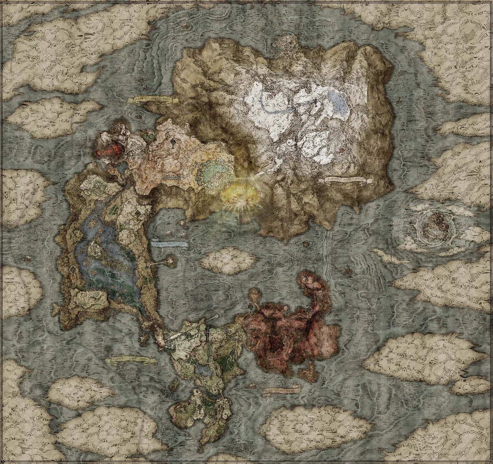

The Lands Between is a vast and mysterious world, filled with danger and wonder.
It is a place where the forces of light and darkness are in constant conflict, and where the fate of the world hangs in the balance.
The player takes on the role of a Tarnished, a being who has been exiled from the Lands Between and is seeking to reclaim their lost grace.
Along the way, they will encounter a variety of characters, each with their own motivations and agendas.
The player will also face a variety of challenges, including powerful enemies, treacherous terrain, and complex puzzles.
Ultimately, the player's choices will determine the fate of the Lands Between and the outcome of the story.
The Golden Order has been broken.
Rise, Tarnished, and be guided by grace to brandish the power of the Elden Ring and become an Elden Lord in the Lands Between.
In the Lands Between ruled by Queen Marika the Eternal, the Elden Ring, the source of the Erdtree, has been shattered.
Marika's offspring, demigods all, claimed the shards of the Elden Ring known as the Great Runes, and the mad taint of their newfound strength triggered a war.
The Shattering. A war that meant abandonment by the Greater Will.
And now the guidance of grace will be brought to the Tarnished who were spurned by the grace of gold and exiled from the Lands Between.
Ye dead who yet live, your grace long lost, follow the path to the Lands Between beyond the foggy sea to stand before the Elden Ring.
And become the Elden Lord.
| Boss Name | Location | Weakness |
|---|---|---|
| Godrick the Grafted | Stormveil Castle | Fire, Physical |
| Rennala, Queen of the Full Moon | Academy of Raya Lucaria | Physical |
| Starscourge Radahn | Caelid, Redmane Castle | Scarlet Rot, Piercing |
| Regal Ancestor Spirit | Nokron, Eternal City | Fire, Physical |
| Rykard, Lord of Blasphemy | Volcano Manor | Serpent-Hunter |
| Morgott, the Omen King | Leyndell, Royal Capital | Margit's Shackle, Bleed |
| Fire Giant | Mountaintops of the Giants | Fire, Slash |
| Mohg, Lord of Blood | Mohgwyn Palace | Purifying Tear, Bleed |
| Malenia, Blade of Miquella | Elphael, Brace of the Haligtree | Frostbite, Bleed, Physical |
| Maliketh, the Black Blade | Crumbling Farum Azula | Blasphemous Claw, Physical |
| Lichdragon Fortissax | Deeproot Depths | Lightning, Fire |
| Dragonlord Placidusax | Crumbling Farum Azula | Piercing |
| Hoarah Loux / Godfrey | Leyndell, Ashen Capital | Bleed, Physical |
| Radagon of the Golden Order | Erdtree | Fire, Physical |
| Divine Beast Dancing Lion | Belurat, Tower Settlement | Fire, Scarlet Rot |
| Rellana, Twin Moon Knight | Castle Ensis | Parry, Physical |
| Scadutree Avatar | Scadutree Base | Fire |
| Messmer the Impaler | Shadow Keep | Frostbite and Bleed |
| Romina, Saint of the Bud | Church of the Bud | Frostbite and Fire |
| Putrescent Knight | Stone Coffin Fissure | Holy, Lightning |
| Commander Gaius | Scaduview | Bleed |
| Midra, Lord of Frenzied Flame | Midra's Manse | Bleed, Physical |
| Metyr, Mother of Fingers | Finger Ruins of Miyr | Bleed, Frostbite |
| Radahn, Consort of Miquella | Enir-Ilim | Rot, Frostbite |
